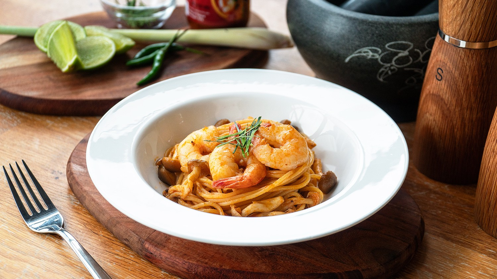

Tom Yum Pasta

Description
We love experimenting with flavours and concocted not one, but three different recipes for your Asian fusion pasta cravings.
Ingredients
- 8 Prawns
- 1 Lemongrass
- 2 Cloves of Garlic
- 2 tbsp Tom Yum Paste
- 170g Spaghetti
Steps
- In a pot of boiling water, cook 170g of Spaghetti according to pack instructions.
- In a pan on medium low heat, add in 2 tbsp of cooking oil. Add in minced garlic. Sauté until fragrant.
- Add in Tom yum paste and water. Mix well until sauce forms.
- Add in prawns and cook for 1-2 minutes.
- Add in cooked pasta, and 1 small ladle of pasta water.
- Season with salt and pepper.
- Mix, coat sauce evenly and serve. Garnish with sliced kaffic lime leaves.